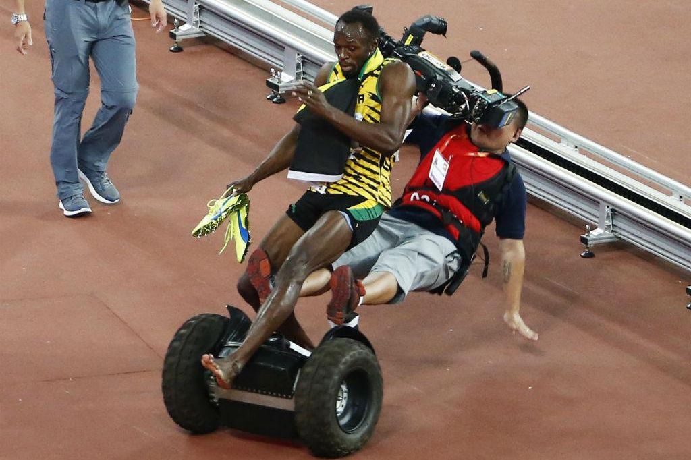
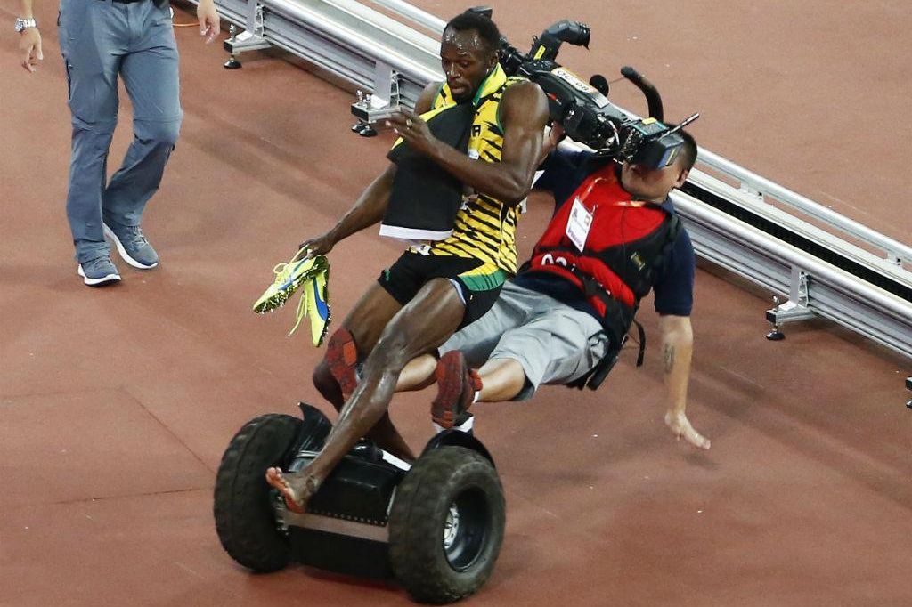
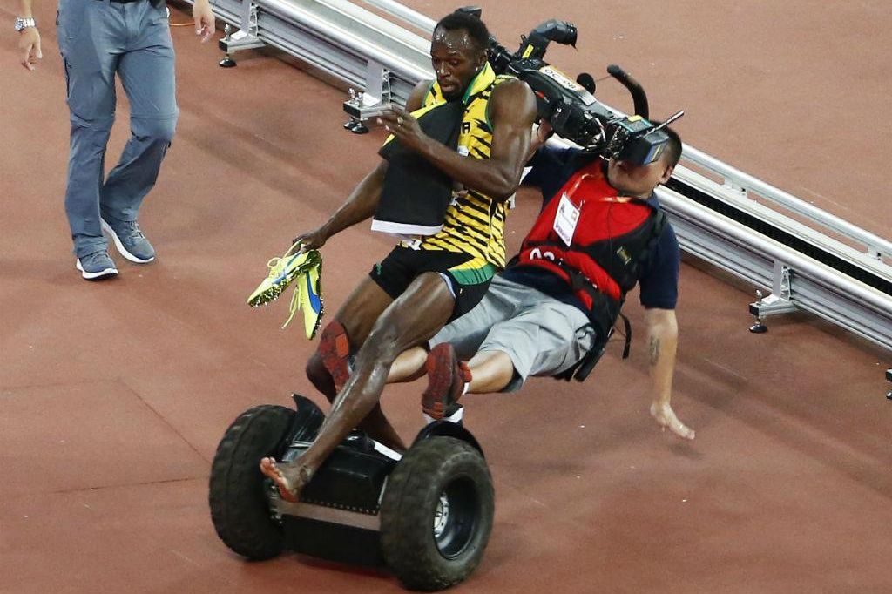
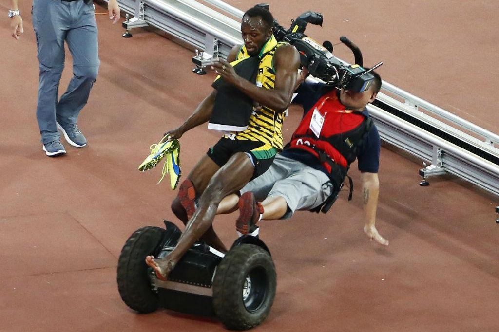

Olimpíadas de Tóquio: 6 curiosidades sobre o atletismo que você precisa saber. Leia Mais... Sete brasileiros com chances de medalha nos Jogos de Tóquio . Leia Mais... Atleta do salto com vara quebra 2 dentes em treino no Japão Leia Mais... Warholm vence Alison dos Santos nos 400m com barreira em Mônaco Leia Mais... Campeã olímpica dos 100m com barreiras ficará fora de Tóquio Leia Mais... Com vaga em Tóquio, Sydney McLaughlin bate recorde mundial dos 400m com barreiras feminino Leia Mais... Com recorde de participantes no atletismo, Brasil chega a 309 classificados para Tóquio Leia Mais... Confira abaixo alguns dos melhores momentos do Atletismo:
Com vaga em Tóquio, Sydney McLaughlin bate recorde mundial dos 400m com barreiras feminino Leia Mais...
 


